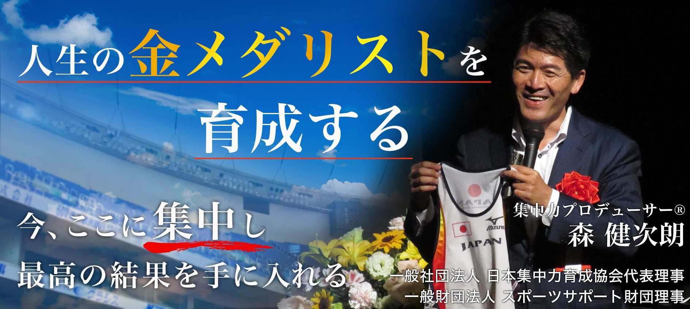
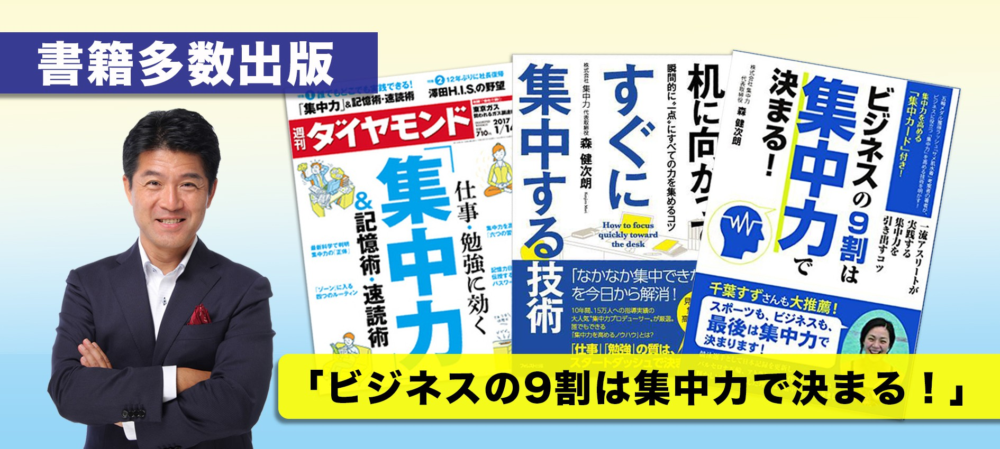

五輪の舞台でトップアスリートを支えた集中メソッドを、
「たのしく・ためになり・すぐ使える」研修と講演で。
オンライン・全国出張対応／お見積り無料
「リラックスした集中」で、注意力の質を高めミスを減らす。
始業前のメンタルリハーサルで、短時間に集中して仕事を終える。
「人生経営の社長」という視点で、仕事を自分ごとに変える。
日本代表から学んだ、力を引き出すコミュニケーション。
元ミズノの競技ウェア開発者。2000年シドニー五輪で開発を担当した「サメ肌水着」は世界特許を取得し、12の世界新記録樹立に貢献。退職後、一流アスリートの本番での集中法を体系化し、「集中力プロデューサー®」として全国の企業・学校・スポーツチームへ講演・研修を届けている。一般社団法人 日本集中力育成協会 代表理事、一般財団法人 スポーツサポート財団 理事。

【究極法】集中力プロデューサー®モリケン先生が全てを暴露
NHK「テストの花道」集中力の授業
「禅寺で学んでいる教えを、子どもでも実践できる形でわかりやすく伝えてもらえた」
「長時間でも眠くならず、楽しく学べてすぐ実践できた。安全意識が現場で変わった」
「本番で緊張しなくなり、模試より本番で力を出せた」
下のボタンから、ご要望をお送りください。
目的・対象・課題をお聞きします。
最適なテーマと構成をご提案します。
オンラインも全国出張も対応します。